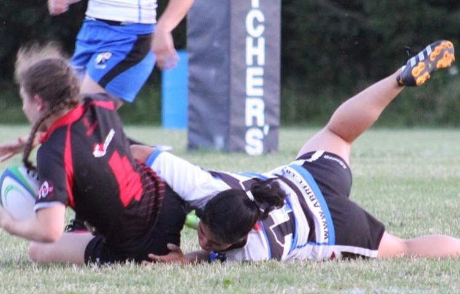
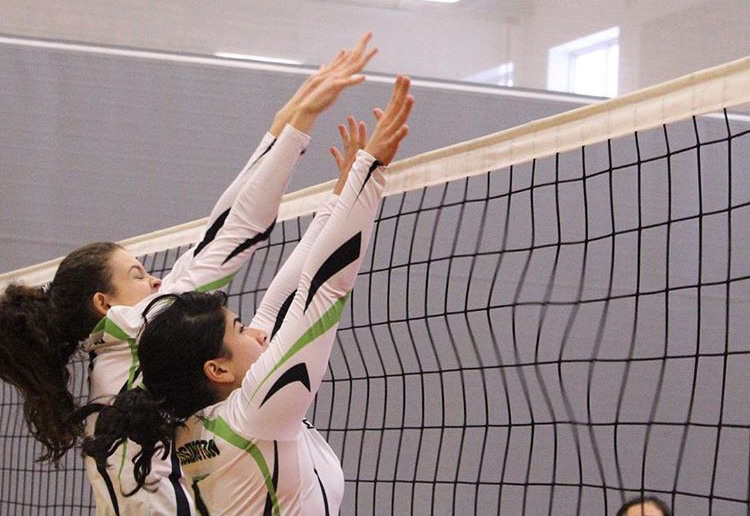

T. Tissington
Athletics
Rugby
I started playing rugby in 2015 for my high school Sacred Heart. I have played four seasons of rugby sevens and rugby fifteens for school as well as one season of rugby fifteens for the Aurora Barbarians team. Of the years I have been playing rugby, I have also supported my coach in developing the junior teams as well as teaching any athletes new to the sport how to play. My coaches believe I am a very valuable player because I have experience playing every position with a high degree of proficiency, but I excel in the positions of hooker, and flanker in fifteens. I am always eager to learn more as well as continue to develop myself as a player and a teammate putting in the effort at practice and during rest days/the offseason. Rugby is one of my passions, I’ve fallen in love with the sport and do my best to get better every single time I touch the ball.
Rugby Achievements
Volleyball
I have been playing volleyball since I could try out for the elementary school team in grade four! Competitively I’ve been playing volleyball for three years and have played four years of volleyball for my high school team. I take every opportunity I can get to touch a ball. I have played for Venom Volleyball club for two years and Markham Thunder volleyball for one year. I have played every position at a competitive level except for middle, but excel in the libero position. I am currently the team captain of my intramural volleyball team at the University of Guelph as well as play in a recreational 6 on 6 league in Guelph. For intramurals, I play on both a co-ed team and a womens team and would always utilize the drop-in times that the Athletic Centre provided pre-Covid!